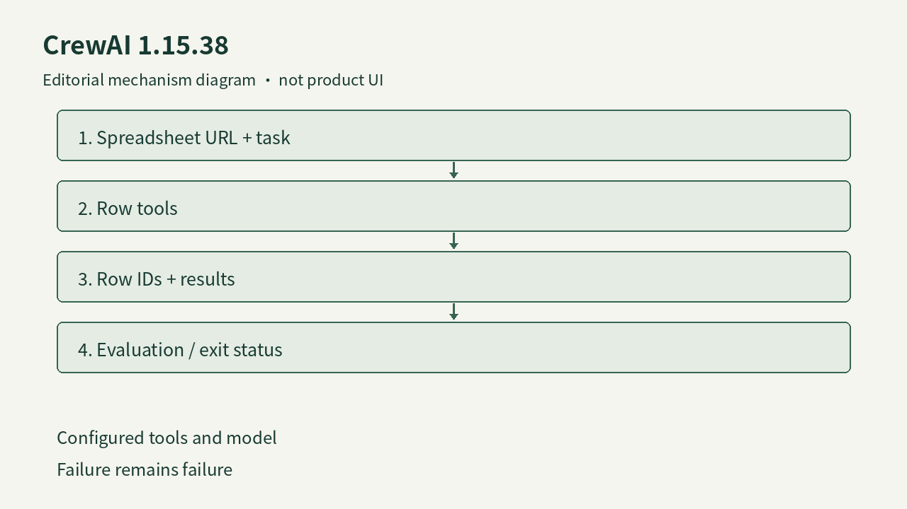

表格不应只是聊天里的一个网址
CrewAI的1.15.38发行说明增加了读取输入中的表格URL并通过工具处理各行的能力。对需要整理线索、核对清单或生成逐项结果的开发者，这提供了比把整张表粘进提示词更明确的数据入口。输入链接、任务要求与行级操作仍需要共同定义；发行说明没有保证任意私有表格都可读，也没有给出所有格式、权限和大表容量的覆盖测试。实际采用应先保留行标识，检查空行、重复项和缺失字段如何进入结果，避免最后得到一份流畅总结，却无法追溯某条记录是否被处理。
CrewAI 1.15.38 · 开源框架／SDK更新

CrewAI的1.15.38发行说明增加了读取输入中的表格URL并通过工具处理各行的能力。对需要整理线索、核对清单或生成逐项结果的开发者，这提供了比把整张表粘进提示词更明确的数据入口。输入链接、任务要求与行级操作仍需要共同定义；发行说明没有保证任意私有表格都可读，也没有给出所有格式、权限和大表容量的覆盖测试。实际采用应先保留行标识，检查空行、重复项和缺失字段如何进入结果，避免最后得到一份流畅总结，却无法追溯某条记录是否被处理。
CrewAI把代理的角色、目标、模型和工具配置分开，工具默认并不是无限开放。开发者可以为某个任务定义专用代理，再把输出交给下一步处理；这种组织方式适合不同步骤需要不同上下文与工具的流程。它也可能增加交接错误：前一个代理写出自然语言结果，后一个把它当成已核实数据。我们的判断是，表格任务应尽量用可校验字段传递结果，保留原始行与失败原因，而不是把代理数量当作质量指标。是否允许委派、代码执行及最多循环次数，都应按任务边界显式配置。
这版把默认模型改为gpt-6-luna。开发者若没有显式设置模型，同样的配置在升级后可能走到不同的服务与行为；因此模型名称不应只写在说明文档里，而要成为可复现运行配置的一部分。官方模型文档允许通过环境、配置文件或代码指定供应商及模型，同时提醒各模型支持的参数并不相同。本文不引用未经核实的价格或性能优势。对一条处理客户资料的流程，升级核对至少应包括实际选中的模型、凭据来源、参数是否被接受，以及结果格式是否仍满足下游校验。
发行说明还修正评估进程报错时的失败记录，以及项目脚本失败后的非零退出状态。这会影响上层自动化是否继续下一步：如果失败与成功都返回相同状态，后续报表可能把没有完成的运行算入结果。CrewAI的项目结构允许把代理任务与有条件分支的Flow组合，因而错误需要沿交接继续传递。建议先人为制造一项无效输入和一次工具失败，核对行级结果、进程退出与评估记录是否一致。这是可复核的采用检查，不是本刊完成的测试，也不应把新的日志字段解释成模型推理已经更准确。